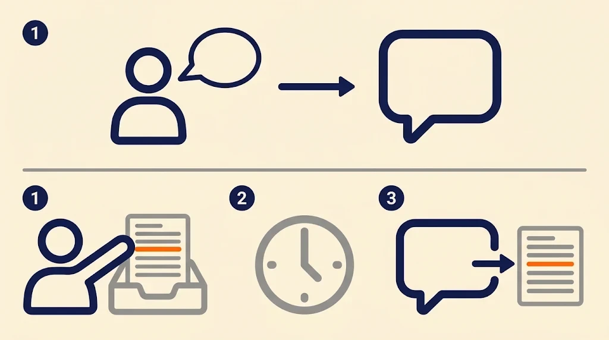

Today Jensen Huang resigned as CEO of Nvidia. Reports tie it to his relationships, one of them with a person alleged to be a foreign spy. Nvidia's announcement gave no reason, the allegations about the spy are unproven, and I only know what has been reported. I will not comment on the personal side. The part that interests me is the question the board and the investigators are reportedly asking: whether he was targeted on purpose.
That question is the whole subject of this post. A person with access, trust and a busy life is the easiest way into any organization, and no firewall sits in front of that.
What Social Engineering Means
Social engineering is getting a person to give up access, information or trust by working on the person. A phishing email is social engineering. So is a phone call from a fake help desk, and so is a friendly stranger at the office door who asks you to hold it open. The attacker never touches the technology.
You can harden a web application, a mobile application, an API and an internal network. You can test them, patch them and test them again. People never reach that state. They can be rushed, flattered, scared or simply trusted, and there is no patch for any of those. Every penetration tester learns early that the human is the weakest link in the chain, and the human element is where I start thinking every time.
Security is an illusion. The point is to slow the attacker down so you know you are being attacked. With firewalls, patches and strong authentication we can do that well. With people it is much harder, and it will stay that way.
It Happens All the Time
We all know this story because he is a famous person. A CEO of one of the biggest companies in the world makes the news. For every story that reaches the headlines, there are many that never do, with people nobody has heard of and companies nobody writes about. Cyber attacks are active all the time, and phishing is running right now, against companies of every size. Most people do not realize how constant it is.
The software gives you no rest either. Say your web application, mobile application, API and internal network are secure today. We still see new Common Vulnerabilities and Exposures (CVE) entries almost every day, which are public records of a vulnerability in a specific product. Many of them are critical, in software that a lot of companies use, and a growing part of that research is done with the help of AI.
AI Is a Simulated Human
Here is where this series begins. An AI model reasons in language. It can be persuaded, it can be led, and it reacts to context the way a person does. In a lot of ways it is a simulation of a human. So everything I just said about people applies to it as well.
That does not mean AI cannot be secured. I know how to secure it. It means it is very hard, harder than securing the code and servers of an application, because the weakness is the same one people have.
Two attack classes show the idea well, and I will go deeper into both in later parts. In a direct prompt injection, the attacker types instructions straight into the AI system and the model follows them instead of its original rules. In an indirect prompt injection, the attacker never talks to the model. They plant instructions in something the model will read later, like an email, a web page, a document or a form submission, and the model follows them when it gets there.

Think of a new employee at the front desk who is eager to help. A direct injection is a stranger walking up and asking for something. An indirect injection is a note left on the desk. The employee reads it, it looks like it belongs there, and they act on it.
Those two are only the start. There are many more vulnerabilities in AI systems, and I plan to go through them one by one.
AI Is Now in Everyday Applications
Many new applications use AI in some way, and many older ones have added it. An application that had no AI before had no AI risk before. Now it does. Every one of them gained a new security vector, and it sits next to everything that was already there: the web layer, the API, the mobile application, the network.
That is why I say AI increases the attack surface. It does not replace the old problems. It adds a new one on top of them, and to be honest it is a big one.
A Different Time
This is a new era, and it is arriving in a different way than the ones before it. I am not sure how else to put it in words. Attacks are found faster, applications carry more than they used to, and the people using them are the same as ever. I do not think people are ready for it. I think security will be required more than ever, in the code, in the infrastructure, in the people, and now in the AI systems we are adding on top.
What Happens to the Work
I do not think the number of jobs is getting smaller. I think everything is shifting at a fast pace, for developers, security engineers and penetration testers alike. Parts of our work, like API, web and mobile testing, will probably be automated to a point where they are not that interesting anymore. The steps we take follow a pattern, and a pattern that is the same every time can be automated.
Maybe I'm right, maybe I'm wrong, those are just my thoughts. AI is a tool that can replace you if you are not using it, so use it. I also want to spend my time where the work is still new, and that is one of the reasons I will focus on AI security in the next period.
What to Expect From This Series
I tested AI systems before I earned my Hack The Box Certified Offensive AI Expert (COAE) certification, and the certification helped me put what I knew in order. The exam is commercial and under confidentiality, so I will not talk about its content, and I will not talk about any client. What I will write about are the attack classes in general terms: how each one works, why it works, and how to defend against it.
Some of the defenses are short to say. Treat everything the model reads as untrusted input, the same way you treat anything a user types. Give every tool the model can call only the access it needs. Check what the model claims against the real system before anyone acts on it. And train the people too, because they are still the other half of the problem.
This is part one. Where in your own applications has AI been added recently, and has anyone tested it as an attack vector?
Thanks for reading. If this was useful, there is more on the blog, and more coming.
I'm Filip Kecman, a penetration tester and security researcher. I write about what I test with my own hands and about what I learn along the way.
If you want to talk about any of this, connect with me on LinkedIn. If you have an idea for a collaboration, or you need a penetration test, reach out through kecman.co.